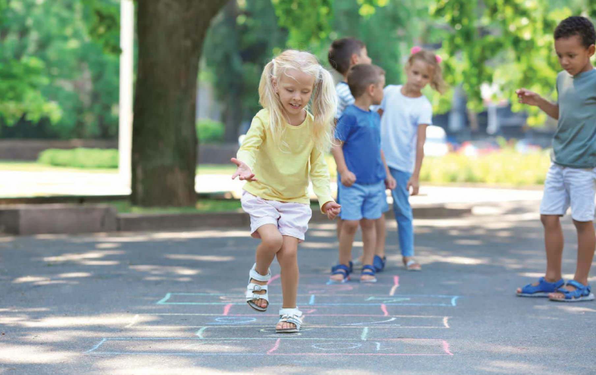
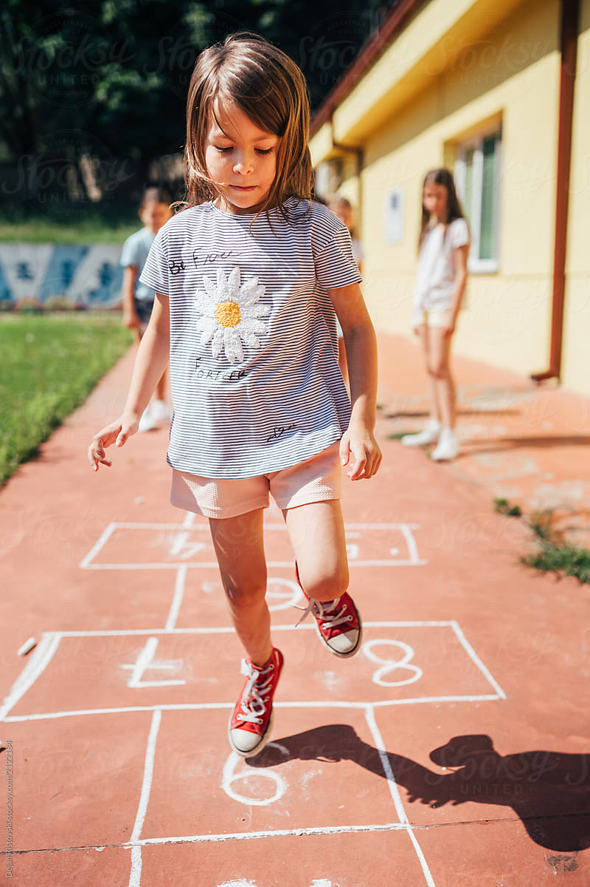
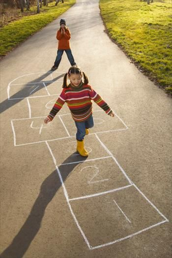

Game Setup: Draw or create a hopscotch grid with numbered squares using chalk or tape on a flat outdoor surface.
Numbering: Number the squares sequentially, usually from 1 to 10 or higher, depending on the design.
Starting Point: Stand at the starting line, usually marked by a single square or designated spot.
Tossing Marker: Toss a small object, like a stone or beanbag, into the first square (number 1) from the starting line.
Hopping Sequence: Hop through the numbered squares, skipping the one with the marker, in a single-leg or alternating-leg pattern.
Balance and Coordination: Maintain balance while hopping and landing on one leg or both legs in numbered squares.
Single Leg Hopping: For squares with one number, hop on one leg. For squares with two numbers (e.g., 3 and 4), hop on two legs.
Marker Retrieval: Hop over the square with the marker and retrieve it on your way back.
Turn-Taking: Players take turns following the hopscotch pattern, starting from square 1 and progressing through the numbers.
Marker Toss: After completing a round, players toss the marker into the next square for the subsequent round.
Progression: Each round, hop through the squares sequentially, avoiding the one with the marker.
Marker Avoidance: Hopping must avoid touching the square containing the marker or landing with two feet in a single-number square.